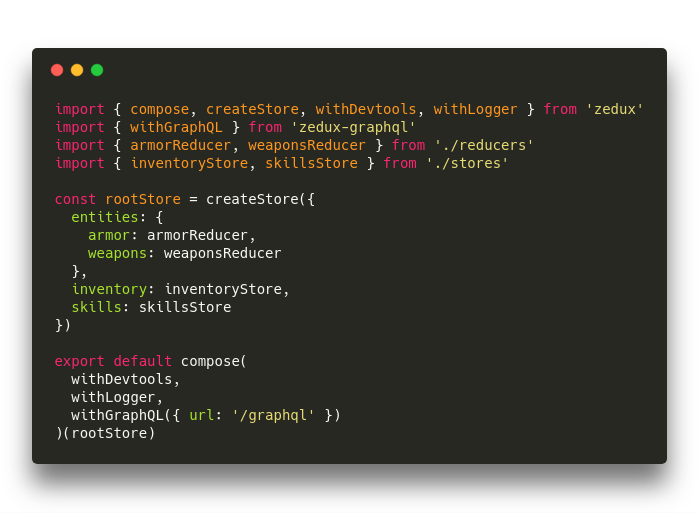

Overview

What is it?
Zedux is a complete tool for state management featuring:
(Optional) Zero configuration.
Built-in support for running generators and observables.
Easy code splitting.
Composable, memoized selectors.
Giant performance optimizations.
Meta chains with standard meta types.
Redux comparison
Zedux is, as its name suggests, based on Redux. Here are some ideologies they both share:
A reducer hierarchy drives state creation and updates.
A single store contains the state of the entire application.
Immutability, immutability, immutability.
Unidirectional data flow.
Reducer hierarchies are explicitly created.
Reducers are pure functions.
Actions and reducers have a many-to-many relationship.
Actions are serializable objects.
Dispatched actions can be observed, saved, and replayed for a time travel debugging experience.
And here are some differences:
Stores are completely synchronous.
Stores are composable.
Boilerplate is an option, not the norm.
Reducer hierarchies are declaratively created.
Code splitting takes a front seat.
Middleware is gone, replaced by inspectors and processors.
Inspectors inspect the store, performing side effects like logging and recording actions.
Processors process specific actions, performing side effects like ajax requests and setting timeouts.
Action namespacing is considered necessary and is facilitated (e.g. Zedux favors
todos/addoverADD_TODOname collision nastiness).
Multiple stores
Zedux conforms to the Redux philosophy that a single store contains the state of the entire application. But it doesn't conform to the philosophy that there should only be one store. Zedux actually encourages that self-contained pieces of state be housed in their own store. This allows for massive performance optimizations and better encapsulation.
But there should only be one root store. All other stores should find themselves somewhere in the hierarchy descriptor of another store. There can be exceptions, of course – Zedux stores can be composed or not composed however you wish. Having a root store is just a good rule of thumb that Redux has demonstrated to be effective for most cases.
Why does it try to do so much?
It really doesn't. Really. But we dodge the question.
Zedux offers a high-level api and performance optimizations through the roof. It does this so that apps of all sizes, from very small to gigantic, will be able to use it comfortably.
So why is this important?
Because. Apps. Scale. This is a point that Redux doesn't address at all.
How many small applications decided against Redux at first, then grew to the point of sorely regretting that decision? How many mid-sized applications chose Redux, then grew to the point that the verbosity became unmaintainable and the number of plugins spiked the learning curve beyond reason?
While Zedux doesn't aim to eliminate plugins, it does aim to reduce their quantity. In their place, it offers a uniform, often orthogonal api across all common aspects of state management. This drastically reduces boilerplate, overall code size, and the steepness of the learning curve.
No more middleware?
This is not so much an opinionated as an experimental step "forward". If you've been watching the Redux community for a while, you've noticed a lot of issues revolving around the middleware system. While the Redux maintainers seem reluctant to relinquish the sacred middleware, Zedux has no such qualms.
In fact, the entire concept of Zedux was first formed by asking the questions: What would Redux be like with no middleware? What other systems could we come up with? What awesome possibilities would open up?
Store composition, for example, is impossible given the asynchronous nature of middleware. Yet there are plenty of ways to go about it. Zedux picked one and it's worked great so far. Not only that, but it's simple. Very simple. Why does Redux still not have composable stores? What are we waiting for1?
This brings us back to the goal of Zedux: To innovate Redux. It seems like somebody decided once that "middleware is good" and we've been stuck there ever since. While still experimenting, Zedux believes there are plenty of thoroughly better alternatives to middleware. So let's find them!
Notes
1 Alright, let's cut Redux some slack. It has become so big that it's impossible for the maintainers to take many risks. If only someone would make an entirely separate library where the Redux community could experiment safely...